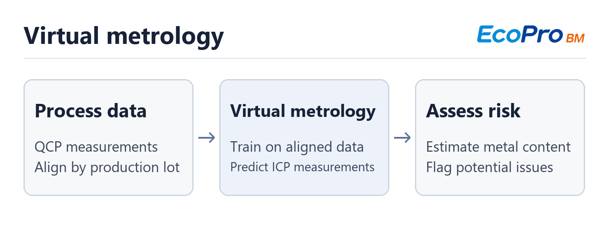
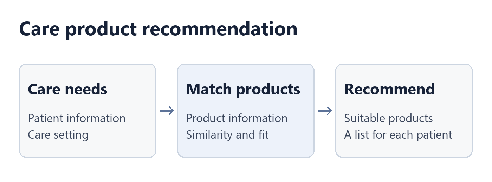
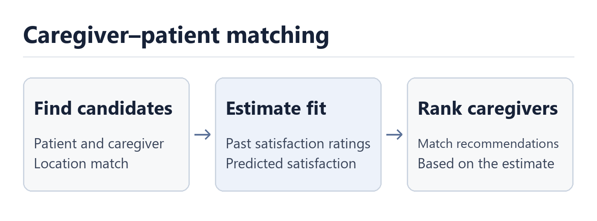

Projects
-
AI assistance for local government administration
Mar 2026–present
Managed development of an AI assistant that retrieves information for public-service workflows and asks follow-up questions to clarify requests.
 View full size
View full size
Agent architecture from my PowerPoint portfolio. -
Metal contamination detection in battery cathode materials
Jan–May 2025
Worked on models that use manufacturing process data to detect metal contamination.

View full sizeVirtual metrology workflow adapted from my PowerPoint portfolio, with the original EcoPro BM logo. -
Predicting steel plate curvature after rolling
Dec 2024–Nov 2025
Worked on image segmentation and contour analysis to predict upward or downward deformation in thick steel plates.
 View full size
View full size
Original pipeline figure from the POSCO project presentation in my portfolio. -
Care product recommendation system
Jul–Dec 2023
Contributed to a system that recommends care products based on patient needs.

View full sizeWorkflow based on Korean patent application 10-2023-0185772. -
Personalized information for patients and caregivers
Sep 2022–Jan 2023
Contributed to an information system for patients, guardians, and caregivers.

View full sizeWorkflow based on Korean patent 10-2635315.